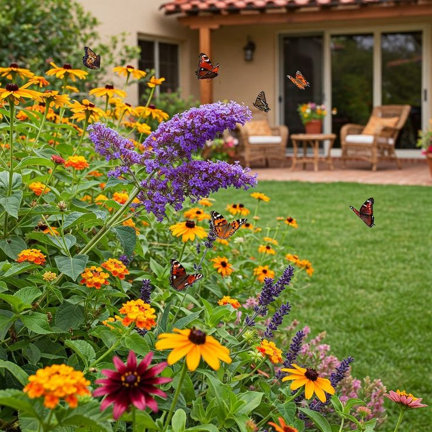
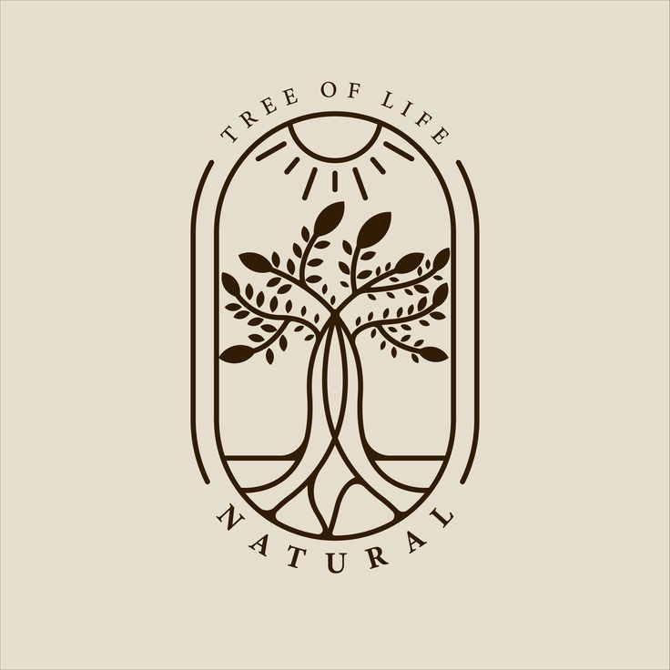
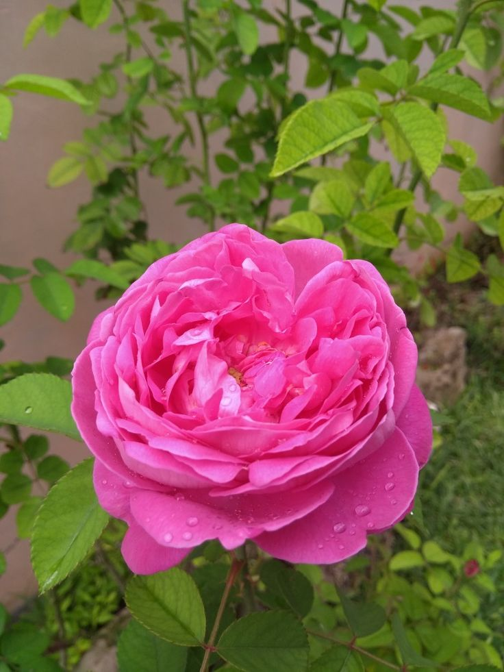
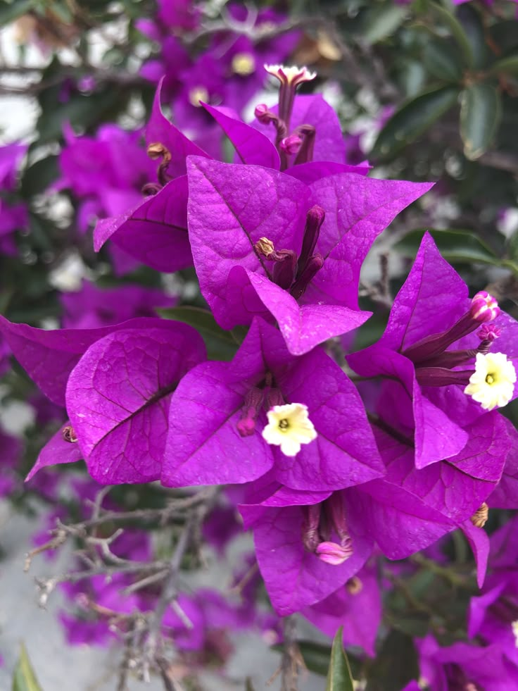
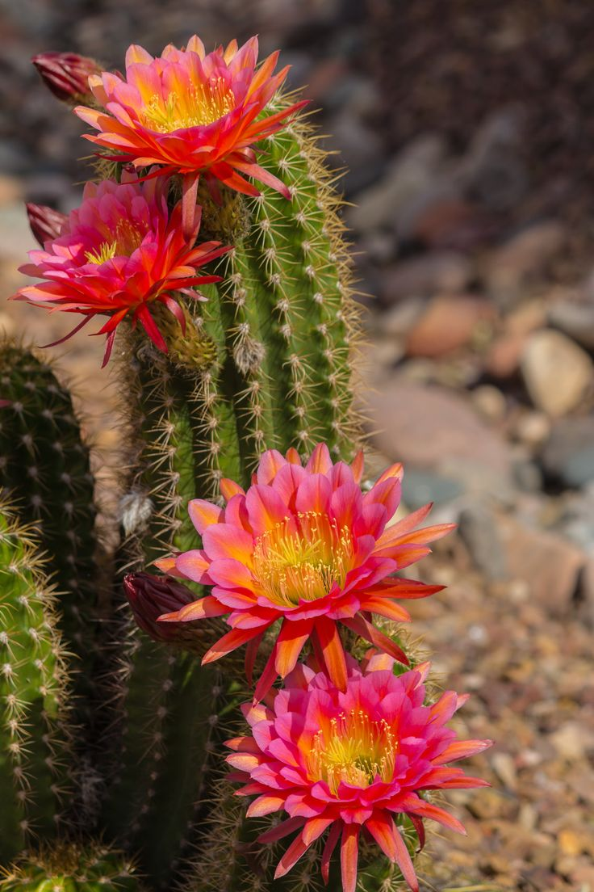
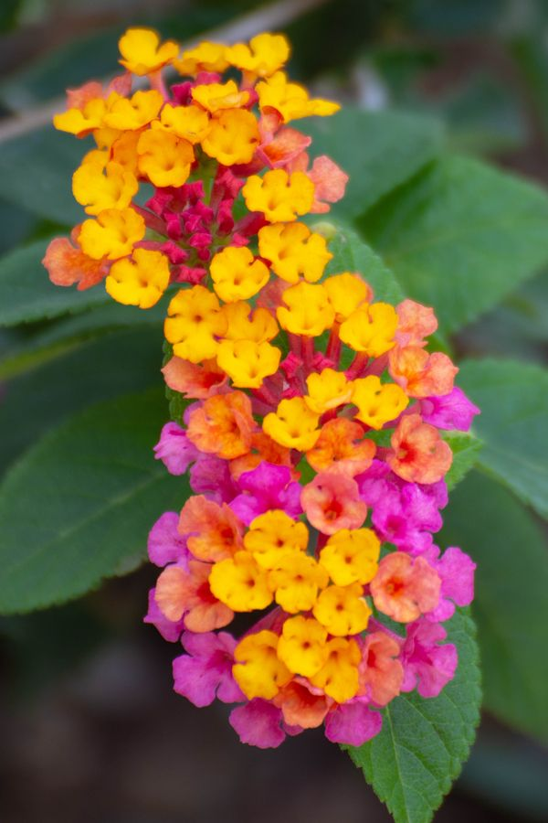
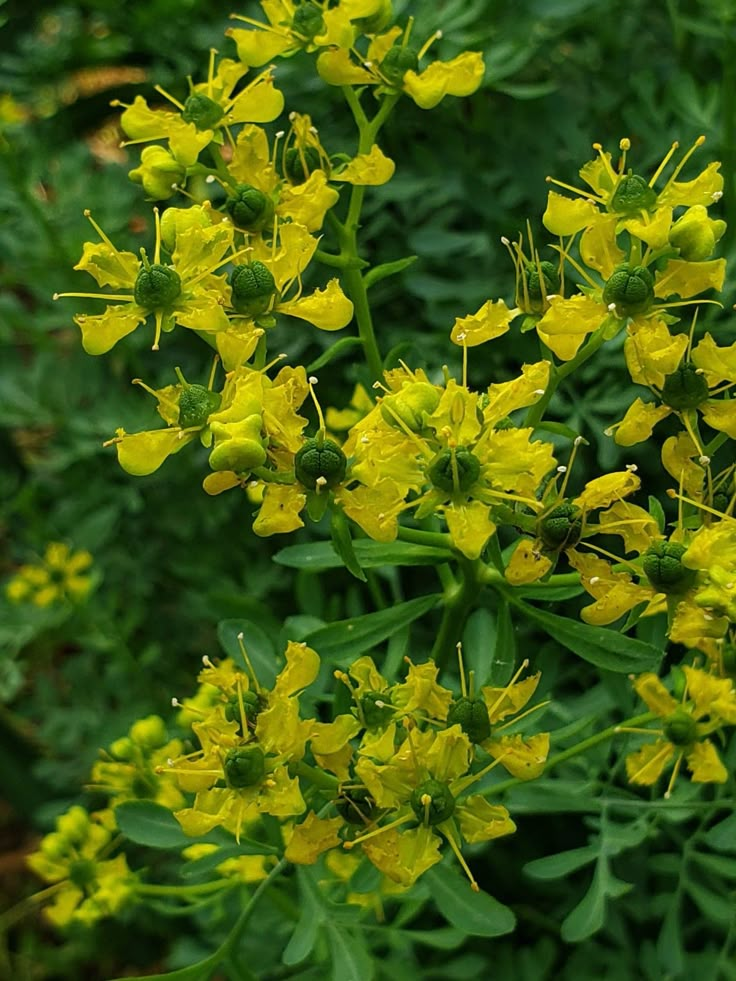
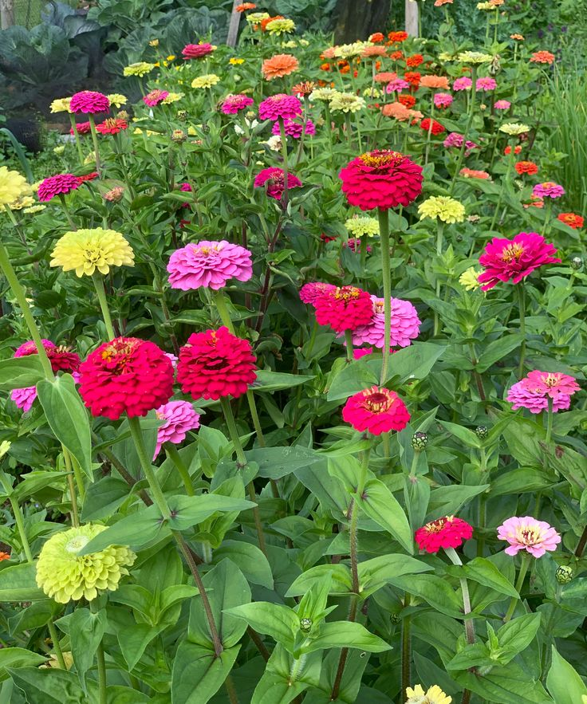

Desarrollar una aplicación que permita informar, guiar y organizar la construcción y el mantenimiento de jardines polinizadores en traspatio, mediante secciones como catálogo de plantas y recomendaciones de cuidado. Con ello se fortalecen las competencias del módulo de desarrollo para dispositivos móviles a través del diseño, implementación y prueba de una solución enfocada a su uso en smartphone.

Especies ideales para atraer abejas, mariposas y colibríes a tu hogar.
Flor resistente, florece todo el año. Atrae abejas y mariposas, crece en cualquier tipo de suelo.
Planta aromática, ideal para colibríes. Requiere mucho sol y poco riego, perfecta para traspatio.
Fácil de cultivar, muy visitada por polinizadores. Florece en primavera y verano.
Mantén tu jardín sano y seguro para los polinizadores:
Lleva el control de lo que plantas, cuándo y cómo lo cuidas:


Ejemplos de jardines polinizadores. Desliza para ver más:




Este proyecto es parte del módulo Desarrolla aplicaciones móviles para iOS. Su objetivo es aplicar conocimientos de diseño, programación y usabilidad en una solución real, enfocada en el cuidado ambiental y la biodiversidad.
Se busca crear una herramienta útil, bonita y funcional, que cualquier persona pueda usar desde su celular para crear y mantener su propio jardín polinizador.